TILE STUDIO DRAWING TUTORIAL
by Mike Wiering, Wiering Software
|
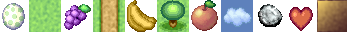
Introduction
This page shows how to draw some simple objects step by step. This demonstrates some of the
special functions in Tile Studio, mainly functions that involve using the color pattern.
Of course, for a complete overview see the Tile Studio Tutorial.
Drawing a simple grass tile
We will start with a simple example of a grass tile that could be used in any game seen from above (like some 2D RPG's).
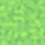
- Start Tile Studio.
- In the palette on the right, left-click somewhere in the light green area.
- Now click again, and again and you'll notice that the color pattern under the palette changes each time. Continue
until you see a nice shade of colors for your grass tile.
- Now we'll choose a set of colors from this pattern which will be used for the grass. Left-click the shade just left
from the center and drag two shades to the right, you'll see that the line above the center becomes an arrow.
- In the toolbox at the left, select the Filled Rectangle ( 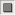 ) and
Smooth Random Fill ( 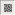 ).
- Finally, with the left mouse button, draw a rectangle over the entire canvas and that's all!
Adding a path in the grass
We will continue with the grass from the example above and add a path/road. This is just one vertical path, but
in the same way you could draw several different tiles that fit together to make any path in your game.
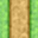
- Make a copy of the grass you just made by pressing Ctrl + D (Duplicate Tile).
- In the same way as you selected the green above, select a nice shade of brown in the palette and select the
three colors at the center in the color pattern.
- Now draw a rectangle in the grass where you want the path to be.
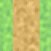
- The edges of the path still need some work, we'll make them darker. In the toolbox at the left, select the
Darken tool ( 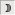 ).
- Now, draw a vertical rectangle (two pixels wide) over both edges of the path so they become darker.
- Finally, repeat the previous step, but now make the rectangle four pixels wide.
Adding a tree in the grass
Now we'll add a tree. Instead of looking at it from the top, we'll use an angle of about 45 degrees, so you can
see a bit of the trunc.
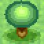
- Again, make a copy of the grass by pressing Ctrl + D.
- We'll start with the shadow. Make sure the Darken tool is still selected and now select the Filled
Ellipse tool ( 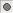 ).
- Now, draw an ellipse for the shadow and add a second smaller one as well (see the images below).
- Now turn off the Darken tool and select a series of three shades of brown that you think are suitable
for the treetrunc and draw it as an ellipse (as below at the left).
- Now choose the two darkest colors in your color pattern, and from right to left, so that the arrow points to
the left
- Use this dark shade to draw the rest of the trunc, which is of course darker because of the shadow from the leaves.
- Now we need the green shades again. Press [ or ] repeatedly until you find the green (or choose a new
green shade from the palette). This time select a wide range (from left to right).
- In the toolbox at the left, move the circle in the Default Bounds box to a higher position (by holding
Shift down and clicking at the new position), this will make
the lighting come from above instead of from the front. Also, left-click once on the Line Width box, so that
the line becomes a little thicker.
- Finally, draw the leaves as an ellipse and your tree is ready!
Drawing a simple cloud
Here is a very easy way to draw a cloud in Tile Studio.
- Start a new tile.
- In the palette on the right, choose a nice color blue for your cloud.
- Now hold Shift down and choose white or very light blue. You'll notice that the pattern below the
palette becomes a gradient from blue to white with an arrow above it pointing to the right.
- Left-click the third shade of blue in the color pattern and drag the mouse pointer to the left, so that a new
arrow appears pointing to the left.
- Again, hold Shift down and now select a dark blue/gray color in the palette. Again, notice that your
color pattern changes. Then select a range starting at the second shade and five shades wide.
- In the toolbox at the left, hold Shift down and click to move the circle in the Default Bounds
box as in the image below and select the Filled Ellipse tool ( ).
Also check if the Line Width is set to 1 (if not, right-click in the Line Width box until the
line doesn't get any thinner).
- Now hold Shift down and draw a few ellipses to create the outside (darker) part of your cloud.
- Now select the lightest four shades of the color pattern (from left to right) and go over the higher parts of
your cloud (again holding Shift down), stay within the area of the cloud to preserve the outlines.
- Finally, you might want to change the background color to see how your cloud would look with a blue sky.
Select a color and use the Flood Fill tool ( )
Drawing a heart
Many games use hearts to indicate the health of the character you're playing with. In Tile Studio you can draw a heart
with ellipses.
- Start a new tile (perhaps restart Tile Studio to make sure you are using the default settings).
- In the palette, choose a color red and click repeatedly until you have a nice pattern to work with. Then select
an area in the color pattern from left to right.
- In the toolbox, select the Filled Ellipse. Now start with one circle, which will be the main part of the
heart. By adding a few more smaller circles/ellipses at the bottom (hold Shift down so they merge with the
existing ones), you can make a point at the bottom. Now add two ellipses at the top (this is probably the hardest
part, you can undo by pressing Ctrl + Z and try again (note that the coordinates are displayed at the bottom).
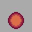 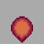 
- You can still see that this heart was made from ellipses, the edges still need a bit of work. You can go on
drawing ellipses from the center to each side until it looks right. Sometimes it might be easier to edit those
remaining pixels by hand.
- Finally, select the brightest four colors in the color pattern and add two small ellipses at the top as a little
bit of reflexion and that's all!
Try these yourself!
Return to Tile Studio Homepage
|
|